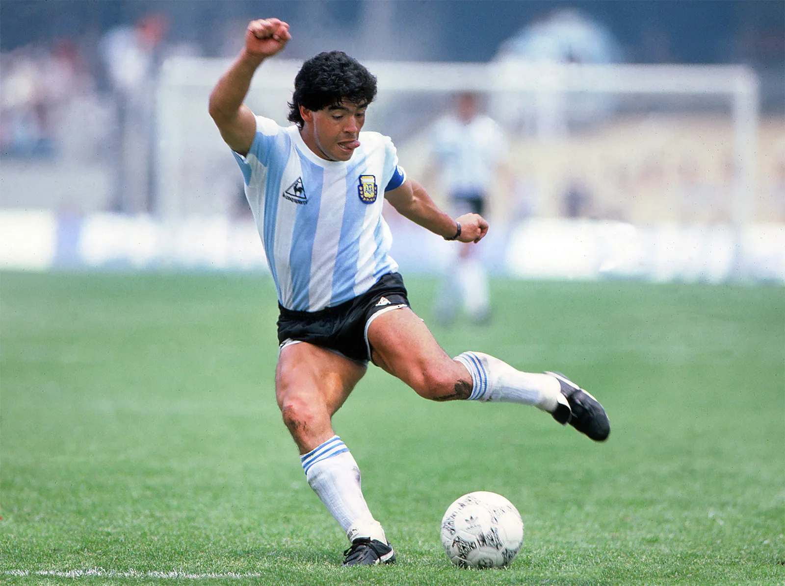
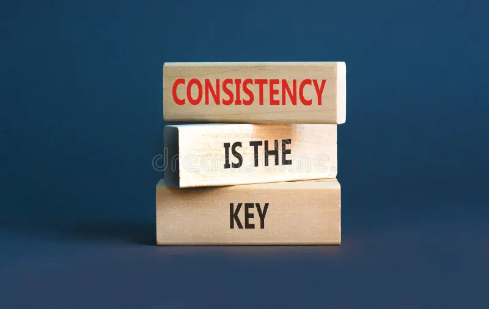
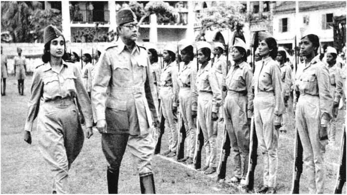
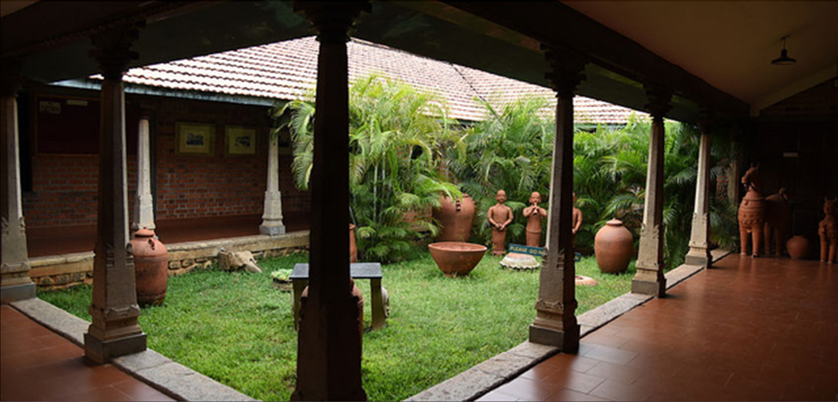

Cinema
Why Schindler's List Feels Real, Not Cinematic
How Spielberg stripped away the polish to deliver a film that doesn't ask you to watch — it asks you to witness.

Football
Messi and the Weight of Genius
What it means to carry the expectations of an entire nation, and still play like a child who simply loves the game.

Mindset
Consistency is Invisible Until It Isn't
The quiet discipline nobody notices — until the results become impossible to ignore.

History
Moments That Quietly Changed the World
History's loudest turning points often began as whispers — decisions made in silence that echoed for centuries.
Engineering
Why We Get Stuck Solving Problems
The real obstacle is rarely the problem itself — it's the way we frame it in the first place.

Experience
Discovering Dakshin Chitra: A Journey Through Living History
A college industrial visit that quietly turned into a lesson in culture, craft, and the soul of South India.